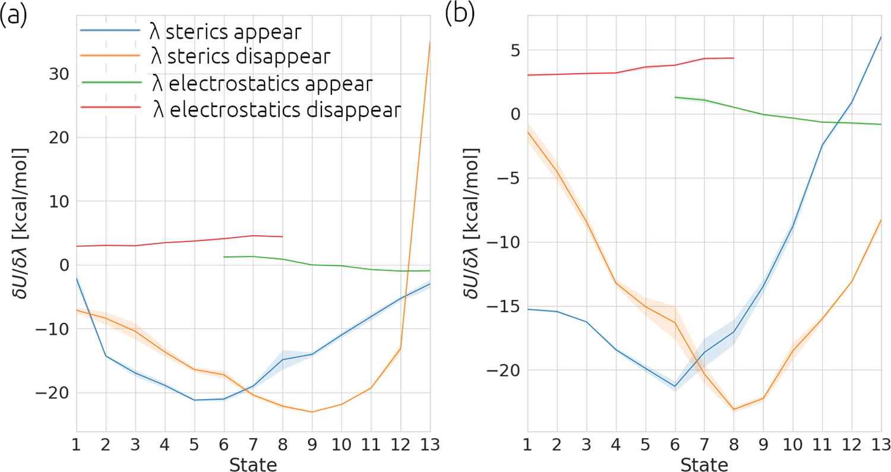

Tutorial
Getting started
TIES MD is a package for the preparation, running and analysis of binding free energy calculations. In this document
we will outline what commands should be run to calculate binding free energies. To start with any free energy calculations
we must first outline what are the expected input files to the TIES MD program.
In this tutorial we will refer to example systems which can be found in the source code. These examples can be download by running:
git clone https://github.com/UCL-CCS/TIES_MD.git
and found by navigating to TIES_MD/TIES_MD/examples/
Input
TIES MD expects a number of input files, these are two essential files, e.g. complex.pdb and complex.prmtop.
These files contain information about the position, topology and parameters for the system. Currently we only support
the AMBER based format prmtop. complex.pdb also contains the alchemical indexes denoting which atoms will
appear and disappear during the simulation. There is also an optional input file, constraints.pdb, and this
contains indexes denoting which atoms, if any, are constrained during the pre-production simulation. This input should
all be placed in a directory named build located where the user wishes to run the simulation. Examples of these files
can be found here.
Please use a directory structure like study/system/ligand/thermodynamic_leg/build this will allow the analysis scripts to
understand the structure and perform analysis automatically. study, system, ligand and thermodynamic_leg
can be renamed to anything but the name of the build directory is fixed. If input for novel ligand transformations is desired the
TIES20 program can be used to generate all required inputs. TIES 20 can be
used via our online service or locally and details of how to use this will be provided
later in these documents.
The only non standard input to TIES MD is a configuration file (TIES.cfg) which specifies options which the user my wish to
occasionally change. This file must be placed alongside the build directory. Here we provide an example of such a file:
#################################################################
# #
# TIES #
# #
#################################################################
#Which molecular dynamics engine will be used, valid options are openmm/namd2.14/namd3
engine = openmm
#Target temperature for the thermostat
temperature = 300*unit.kelvin
#Target pressure for barostat
pressure = 1*unit.atmospheres
#How much production sampling to run per alchemical window (4ns recommended)
sampling_per_window = 4*unit.nanoseconds
#How much equilibration to run per alchemical window (2ns recommended)
equili_per_window = 2*unit.nanoseconds
#Which estimators to use. Valid options are: TI, FEP
methods = FEP, TI
#How many total replicas of each window are run (we recommend at least 5).
total_reps = 5
#Boolean for if we will split all replicas into separate runs. (1 for maximum parallelism)
split_run = 0
#Where in lambda schedule (0->1) should the electrostatic potentials begin, stop appearing.
elec_edges = 0.5, 1.0
#Where in lambda schedule (0->1) should the Lennard_Jones potentials begin, stop appearing.
ster_edges = 0.0, 0.5
#The value the global controlling parameter takes in each window (13 windows of this spacing recommended)
global_lambdas = 0.00, 0.05, 0.1, 0.2, 0.3, 0.4, 0.5, 0.6, 0.7, 0.8, 0.9, 0.95, 1.00
#The name of the pdb file with constraints in the build directory, i.e. cons.pdb If no constraints pass na
constraint_file = na
#Which column in pdb are constraints provided valid options are occupancy/beta_factor. (beta_factor is standard)
constraint_column = beta_factor
#Manually specify box vectors of this simulation, unit Angstrom.
cell_basis_vec1 = 50, 0.0, 0.0
cell_basis_vec2 = 0.0, 50, 0.0
cell_basis_vec3 = 0.0, 0.0, 50
#What input type is provided, only AMBER supported.
input_type = AMBER
total_reps and split_run are options which can be used to achieve simple parallelism of the simulations.
For example if you wished to run a total of 5 simulations on 5 GPUs in parallel one could use the settings
total_reps = 5 and split_run = 1. See the Parallelization section for more details of how to
achieve this.
The following image shows TIES_MD applied to one alchemical transformation.
{kind=link}
The setting global_lambdas defines the values the alchemical parameter λ will take in each alchemical
windows. global_lambdas should run from 0 to 1. As global_lambdas varies from 0 to 1 some atoms in the
system are turned on and off moving the system between two physical states (see Alchemical Calculations).
The values given to elec_edges and ster_edges define exactly how λ modifies the potential
energy functions of the system and for more information these settings please see the Alchemical Pathways section.
Note the option constraint_column which determines if the constraint indexes will be read from the temperature factor
or occupancy column of the constraints PDB. The alchemical indexes are always be read from the temperature factor column
in the main PDB complex.pdb. TIES20 will populate a TIES.cfg automatically with the correct box size.
Typically a constraint file may be used during preproduction of simulations involving proteins but possibly not a small drug like molecule in only solvent. It will be shown later in the Binding Free Energy Tutorial section when and why we use a constraints file.
Command Line
With all input present in the build directory and TIES MD installed we are almost ready to calculate binding
free energies. TIES_MD can be invoked on the command line by just running TIES_MD and this will use all default
settings and the settings found in TIES.cfg. The setting which can be taken on the command line and their default
values are as follows:
[--config_file=./TIES.cfg]
A string for the path pointing to where the TIES.cfg file is located.
[--exp_name=complex]
This is the name of the experiment and the prefix that TIES OpenMM will expect on the input pdb and prmtop file.
Note that the constraints pdb is specified separately in the config file.
[--run_type=run]
A string either `run`, `setup` or `class`. `run` will tell TIES OpenMM to execute the binding free energy calculation,
`setup` will prep the output directories and `class` will halt the program after the construction of the TIES class,
this can be used in testing or advanced analysis.
[--windows_mask=None]
Comma separated list of integers. These specify what alchemical windows the current instance of TIES OpenMM should
run. By default all windows will be run.
# Below are OpenMM specific options, these are silently ignored for NAMD runs.
[--devices=0]
A comma separated list of integers which tells TIES OpenMM which GPUs to run on. If multiple GPUs
are specified then TIES OpenMM will parallelize requested replicas over the available GPUs.
[--rep_id=0]
An int which will be used to generate the names of output files. Should be used if many independent replicas of the
same simulation are run on different nodes to ensure output is writen to unique location.
Simulation Preparation
TIES_MD is run in two stages first using the option --run_type=setup this prepares output directories and MD engine
input scripts, this stage is not compute intensive and can be run on a PC or HPC head node. The setup stage can but does
not have to be run of you are using OpenMM and directories are built when using --run_type=run also. Output directories are prepared
with the structure LAMBDA_X where X is a float denoting what alchemical window that folder contains the output for.
Within LAMBDA_X there are directories named repY where Y is an integer which denotes a replica in the ensemble. In the
repY directories there are three more directories: equilibration, simulation and results. The equilibration and
simulation directory will contain all the output for the pre-production and production stages of the simulation
respectively. The results directory will contain the files with potentials and gradients output by TIES_MD or NAMD.
The files in the results directories will be analysed to calculate binding free energies. Considering the application of
this setup stage to this example
for the zero sum transformation of ethane to ethane the setup command would be:
ties_md --exp_name=sys_solv --run_type=setup
The above sets up an OpenMM calculation. Alternatively to use NAMD some options must be changed please see this
modified config file
as an example of what to change.
Running Simulations
The second stage of running TIES_MD, after setup, involves the running of the MD simulations, this is compute intensive
and can only be run on a HPC for all but the smallest systems. The execution of TIES_MD branches at this point dependant
on what MD engine is being used. HPC submission scripts should be prepared with the target MD engine in mind.
Consider the same example, used in the
setup stage, for the transformation of ethane to ethane. If in TIES.cfg the option global_lambdas is set
equal to 0.0, 0.2, 0.4, 0.6, 0.8, 1.0 there are 6 alchemical windows and the option total_reps is set equal
to 1, there is therefore 6x1 = 6 total simulations to perform. If a HPC submission script was to request one node with
6 GPUS with each GPU running one alchemical window the run lines for an OpenMM calculation would look like:
ties_md --exp_name=sys_solv --windows_mask=0,1 --devices=0&
ties_md --exp_name=sys_solv --windows_mask=1,2 --devices=1&
ties_md --exp_name=sys_solv --windows_mask=2,3 --devices=2&
ties_md --exp_name=sys_solv --windows_mask=3,4 --devices=3&
ties_md --exp_name=sys_solv --windows_mask=4,5 --devices=4&
ties_md --exp_name=sys_solv --windows_mask=5,6 --devices=5&
There are a lot of options for how these OpenMM calculations can be structured and parallelized with TIES_MD see our
Parallelization page for more information on this. For a NAMD calculation if the submission script requested 6 CPU
nodes each with 128 cores the run lines in the submission script might look like:
cd $build/replica-confs
for stage in {0..3}; do
for lambda in in 0.0 0.2 0.4 0.6 0.8 1.0; do
for i in {0..0}; do
srun -N 1 -n 128 namd2 --tclmain run$stage.conf $lambda $i &
sleep 1
done
done
wait
done
Notice in the NAMD example reference is made to a directory $build/replica-confs this is where the NAMD input scripts are writen
during the TIES_MD setup stage. Also notice in the NAMD examples there is a loop over the stages these are three
pre-production stages and one production stage. The preproduction stages are a minimization followed by an NVT equilibration
and finishing with NPT equilibration. The production stage is NVT simulation, it is the production simulation which is
analysed to calculate the results. These stages are performed automatically by TIES MD when running with
OpenMM but must be explicitly executed when using NAMD as shown above. The exact submission script for a particular
HPC and the settings with which each engine should be run to get good performance is a wide problem without a general
solution to solve any issues we would suggest consulting user manuals of both HPC and MD engine, reading our example HPC Submission scripts or submitting an issue on Github.
Analysis
The analysis of the files found in the output can be performed by TIES_analysis which is a submodule of TIES_MD.
TIES_MD will create the input needed to perform the analysis. Input configuration files for TIES_analysis will be filled
in with information such as the lambda schedule or which MD engine was used. If the directory structure
study/system/ligand/thermodynamic_leg/build was used then these config files are written to the study directory.
Some information is missing from these config files which must be filled out. The missing information is for the names
of the thermodynamic_leg directories. Add the names of the thermodynamic_leg to the
config file analysis.cfg under the option legs as an example see the option legs
in this example script. This example analysis input also has an exp.dat file
populated for the system named ethane and a ligand transformation in that system called zero_sum, this transformation
has an theoretical ΔG of 0.0 kcal/mol and an unknown standard deviation associated with that measurement. Any unknown
values in exp.dat which need to be populated can be left as 0.0. The theoretical ΔG of this ethane zero sum system is zero
because the transformation carried out is ethane into ethane so we should expect the result to sum to zero. This is not
the result we would expect in general and is special only to a test case such as this. To save time an exp.dat file
with all values set to 0.0 can be generated with TIES_analysis by running:
ties_ana --run_type=setup
The information in the generated exp.dat will be inferred from the directory structure.
If desired the user can populate the exp.dat correct (non-zero) values at a later date for their own reference/analysis.
With analysis.cfg and exp.dat populated the analysis can then be executed on a HPC head node or PC by running
TIES_analysis in the study directory using the command:
ties_ana
This will produce as output a file results.dat in the study directory which contains a python dictionary keyed
first by the methodology used, then the system name and then ligand name. Each value in the dictionary is a list, the first
entry in that list is the calculated free energy change and the second entry is the standard deviation associated with
that free energy change. So for example the results.dat output from the ethane to ethane transformation example
would look something like:
#METHOD SYSTEM LIGAND
{'OpenMM_FEP': {'ethane': {'zero_sum': [-0.023, 0.023]}},
'OpenMM_TI': {'ethane': {'zero_sum': [0.003, 0.076]}}}
To complement this main output TIES_analysis will also produce analysis figures which should help in determining the
validity and accuracy of calculations. TIES_analysis will place these figures in a new directory named
analysis/engine/method/system/ligand/thermodynamic_leg/
{kind=link}
Panel a) pertains to FEP results and measures the overlap in phase space between alchemical states (λ index). If the off diagonal element of this matrix are less then 0.03 then this can serve as a warning to the user if their states are too far apart. Please see the work of Mey et al. for more details on this analysis.
Panel b) pertains to TI results and shows gradient of the potential with respect to the alchemical controlling parameter (λ) rapid changes in this gradient warn the user that the results may be inaccurate. As an example see the following figure:
{kind=link}
Panel a) show the analysis for a calculation where the gradient of ‘λ sterics disappear’ is changing too quickly in
states 12 - 13. This will lead to inaccuracies in numerical integration used in the TI method. Panel b) shows the
results from a simulation of the same chemical system with modified alchemical settings which soften how the Van der Waals
forces are removed. This softening
is a common in alchemical methods and default in our implementation of TIES, please see our TIES
paper for more details.